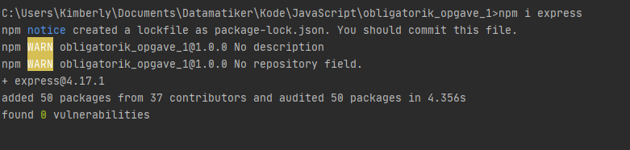
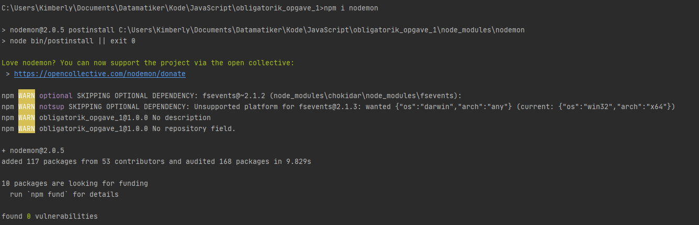

Når man installerer Node.js på sin computer, gør man det muligt at importere custom libraries, kaldet for moduler, som giver JavaScript flere funktionaliter end selve JavaScript-sproget tillader. Der bliver som nævnt importeret JavaScript-filer med funktioner, som kalder C++ metoder i V8.
Man finder kommandoerne, vejledning og kodeeksempler til de forskellige moduler på npm er en 'open source' package manager til Node.js, hvor udviklere frit kan dele JavaScript kode og moduler. npm, Inc., blev opkøbt af Github i 2020.
Man installerer npm ved at indtaste kommandoen "npm init" i terminalen:
Dette tilføjer package.json-filen og mappesystemet. Hver modul har sin egen mappe med forskellige filer, som vil bruges til at installere den, alt efter hvilken kommando er blevet indtastet i terminalen.
Man installerer en modul ved at indtaste "npm install " efterfulgt af modulens navn. Alternativt kan man kopiere kommandoen fra npmjs.com siden, som i Express-eksemplet nedenfor, kan det se sådan ud:

Når man installerer moduler, bliver 'package.json' filen opdateret med modulernes navne og versionen under "dependencies".
For at bruge modulet, kalder man metoden require('modulNavn') i JavaScript-filen, som forneden:
Her er nogle eksempler på moduler, som jeg kender.
Man skriver "npm i express" i terminalen, som følgende:

Som man kan se på billedet, blev der tilføjet 50 packages fra 37 forskellige brugere, da modulerne i NPM er 'open source'.
Express er en webapplikation-framework, som forsyner mig med HTTP-metoder og meget andet, så min Node.js applikation kan vises i en browser. For eksempel gør den, at jeg kan bruge GET-requests, som henter data eller html-sider når en URL-adresse bliver indtastet i browseren.
Man installerer Nodemon ved at skrive "npm i nodemon" i terminalen:
Nodemon er smart når man udvikler webapplikationer, fordi den genstarter programmet hver gang den registrerer ændringer i koden. Derfor behøver jeg ikke trykke "Kør"-knappen hver gang jeg laver en ændring og vil se resultatet i browseren. Jeg kan nøjes med bare at gå ind i browseren, genindlæse siden og så er ændringerne der.
Når man importerer modulet fs, importerer man metoder, som gør det muligt at læse og skrive til filer.
validator er et modul, som validerer data. For eksempel F.eks .isURL(kimberly.suaris@outlook.com) tjekker om mailadressen er skrevet i det rigtige format og returnerer true.
chalk modulet kan bruges til at printe til konsollen i farver.